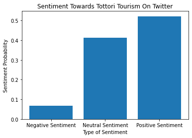

Twitter Sentiment Analysis On Python to find out the sentiment of people in Japan in regards to the 'Tourism in Tottori'
日本語での説明はこちら
Ever wondered what the people think about a certain topic over the internet? Or what kind of sentiment they have regarding
the topic? Current developments in Machine Learning and Data Mining have enabled us to find sentiment of the masses
over the internet regarding on almost any topic.

The current topic will look into how the netizens on Twitter feel about Tourism in Tottori and gain some insights into people's
tendency of looking at Tottori as a potential place for a holiday
日本語説明
Made on 24th March 2023

What is Sentiment Analysis?
Sentiment analysis (or opinion mining) is a natural language processing (NLP) technique used to determine whether data is positive, negative or neutral. Sentiment analysis is often performed on textual data to help businesses monitor brand and product sentiment in customer feedback, and understand customer needs.
However, Sentiment analysis can be used for research purposes as well!
Lets have a look!
Japan's countryside has been struggling to get its tourism industry running and back on track
since the end of the pandemic. What could be the case?
In this context the Tottori's prefectural government has put out a lot of offers to attract
more tourist from all over the country and even abroad, but how has the public reacted to it?
One way to find out that perception is by doing sentiment analysis using the
python programming language
I have tried to solve this problem through the following steps:
- Data mining around a 1000 tweets from Twitter regarding the keyword: 鳥取観光
- Using Google Translate packages in python to translate all the mined tweets
- Use Natural Language processing packages such 'Roberta' by hugging face to perform Sentiment analysis
- Visualise the result on a graph
So let's get started
We wil mine tweets for the first step, we need some libraries installed to Mine tweets
import snscrape.modules.twitter as sntwitter
import pandas as pd
Next we mine tweets from Twitter (I have used a method where we don't need to use the twitter API!) I used the keyword '鳥取観光' to mine the 1000 tweets from all over Twitter in the span of One year from Feb 20, 2022 to Feb 20, 2023
query = "鳥取観光 until:2023-02-20 since:2022-02-20"
tweets = []
limit = 1000
for tweet in sntwitter.TwitterSearchScraper(query).get_items():
if len(tweets) == limit:
break
else:
tweets.append([tweet.date, tweet.user.username, tweet.content])
df = pd.DataFrame(tweets, columns = ['Date', 'User', 'Tweet'])
df.to_csv('tottori_tweets.csv')
We check if the dataset is perfectly mined from the website using the following code
import pandas as pd
data = pd.read_csv("tottori_tweets.csv")
print(data.head())
The output will look like the following in the terminal
Unnamed: 0 Date User \
0 0 2023-02-19 23:26:52+00:00 senryuji_hino
1 1 2023-02-19 17:25:52+00:00 oimo_0222
2 2 2023-02-19 13:16:13+00:00 hiko39115
3 3 2023-02-19 01:54:44+00:00 recruit_oe
4 4 2023-02-18 22:38:56+00:00 senryuji_hino
Tweet
0 おはようございます\n\n本日の #泉龍寺 は曇りです\n最高気温4度・最低気温マイナス2度...
1 島根に住んでいる友達と\n鳥取砂丘に行きました🤍\n初鳥取観光は砂丘でした- ̗̀ ( ˶'...
2 【水木しげるロード】【境港夕凪の湯御宿野乃】【境港水産物直売センター】ゲゲゲに楽しい【鳥取境...
3 大江ノ郷自然牧場が、プロが選ぶ「観光・食事・土産物施設100選」に選ばれました✨鳥取県で唯一...
4 おはようございます\n\n本日の #泉龍寺 は雨です\n最高気温11度・最低気温3度\n現在...
The file will be saved in your directory
Now that we have our data, it is time to install Google Translate on python!
pip install googletrans==3.1.0a0
It will take like a minute to install.
⚠️Attention! For some reason the package does not work in VSCode and always gives some error, try using Google CoLab!
After installing the google translate package, we now try to translate all the tweets inside the dataset
data['English'] = data['Tweet'].apply(translator.translate, src='ja', dest='en').apply(getattr, args=('text',))
data.to_csv('tottori_tweets_translated.csv')
Checking if the tweets are translated properly
review = pd.read_csv("tottori_tweets_translated.csv")
print(review.head())
The output of the translated tweets is saved in a CSV file and will display an output in the terminal like the following:
Unnamed: 0 Unnamed: 0.1 Date User \
0 0 0 2023-02-19 23:26:52+00:00 senryuji_hino
1 1 1 2023-02-19 17:25:52+00:00 oimo_0222
2 2 2 2023-02-19 13:16:13+00:00 hiko39115
3 3 3 2023-02-19 01:54:44+00:00 recruit_oe
4 4 4 2023-02-18 22:38:56+00:00 senryuji_hino
Tweet \
0 おはようございます\n\n本日の #泉龍寺 は曇りです\n最高気温4度・最低気温マイナス2度...
1 島根に住んでいる友達と\n鳥取砂丘に行きました🤍\n初鳥取観光は砂丘でした- ̗̀ ( ˶'...
2 【水木しげるロード】【境港夕凪の湯御宿野乃】【境港水産物直売センター】ゲゲゲに楽しい【鳥取境...
3 大江ノ郷自然牧場が、プロが選ぶ「観光・食事・土産物施設100選」に選ばれました✨鳥取県で唯一...
4 おはようございます\n\n本日の #泉龍寺 は雨です\n最高気温11度・最低気温3度\n現在...
English
0 good morning\n\n#Senryu-ji Temple is cloudy to...
1 With friends who live in Shimane\nI went to To...
2 [Mizuki Shigeru Road] [Sakaiminato Yunagi-no-Y...
3 Oenosato Natural Ranch was selected as one of ...
4 good morning\n\nIt's raining at #senryu-ji tod...
We have successfully translated all the tweets from Japanese to english and also created a new CSV file with all the translated data in the english column. ☀️It is important to note that, since we do not translate directly and use machine translation, it might lose some level of accuracy!
Now we install some Natural Language processing libraries
pip install nltk
pip install transformers
Now we add all the necessary libraries for doing senitment analysis on the dataset
from cgitb import text
import csv
import pandas as pd
import nltk
import numpy as np
from transformers import AutoTokenizer
from transformers import AutoModelForSequenceClassification
from scipy.special import softmax
from tqdm.notebook import tqdm
from nltk.sentiment import SentimentIntensityAnalyzer
import urllib.request
Now we set up a code to output sentiment score for each tweet present in the dataset we created above
def preprocess(example):
new_example = []
for t in text.split(" "):
t = '@user' if t.startswith('@') and len(t) > 1 else t
t = 'http' if t.startswith('http') else t
new_example.append(t)
return " ".join(new_example)
df = pd.read_csv("tottori_tweets_translated.csv")
example = df['English'][16]
MODEL = f"cardiffnlp/twitter-roberta-base-sentiment-latest"
tokenizer = AutoTokenizer.from_pretrained(MODEL)
model = AutoModelForSequenceClassification.from_pretrained(MODEL)
#Running example on ROBERTA
encoded_text = tokenizer(example, return_tensors='pt')
output = model(**encoded_text)
scores = output[0][0].detach().numpy()
scores = softmax(scores)
scores_dict = {
'Roberta_Neg' : scores[0],
'Roberta_Neu' : scores[1],
'Roberta_Pos' : scores[2]
}
def polarity_scores_roberta(example):
encoded_text = tokenizer(example, return_tensors='pt')
output = model(**encoded_text)
scores = output[0][0].detach().numpy()
scores = softmax(scores)
scores_dict = {
'roberta_neg' : scores[0],
'roberta_neu' : scores[1],
'roberta_pos' : scores[2]
}
return scores_dict
#Whole Data set on ROBERTA
res = {}
for i, row in tqdm(df.iterrows(), total=len(df)):
text = row['English']
myid = row['User']
#roberta_result = polarity_scores_roberta(text)
res[myid] = polarity_scores_roberta(text)
print(pd.DataFrame(res).T)
pd.DataFrame(res).T.to_csv('tottori_tweets_sentiment_scores.csv')
The output will look like the following in terminal
It is a set of probability score which tells if the tweet has the possibility of being Negative, Neutral or Positive
roberta_neg roberta_neu roberta_pos
senryuji_hino 0.003258 0.133745 0.862998
oimo_0222 0.001793 0.083986 0.914221
hiko39115 0.003020 0.187635 0.809345
recruit_oe 0.004128 0.146394 0.849479
mamacreamsoda 0.752883 0.196891 0.050227
... ... ... ...
bfziwVEEvdnhknj 0.011227 0.866529 0.122244
KiniTabi 0.003765 0.256433 0.739802
HENA_choco_Late 0.002621 0.042952 0.954427
7QWJV4BLtzussqY 0.003928 0.254124 0.741948
tera_cbr 0.130662 0.633455 0.235883
[626 rows x 3 columns]
Now aggregating all the tweets and their scores
roberta_nu = data_1['roberta_neu'].mean()
roberta_p = data_1['roberta_pos'].mean()
print('Negative Sentiment Score:', roberta_n, 'Neutral Sentiment Score:', roberta_nu, 'Positive sentiment Score:', roberta_p)
total = roberta_n + roberta_nu + roberta_p
print('Total Score Probability:', total)
The output will look like the following in the terminal:
Negative Sentiment Score: 0.06635993733833866 Neutral Sentiment Score: 0.4121005301733227 Positive sentiment Score: 0.5215395210942492
Total Score Probability: 0.9999999886059106
The output looks good but it does not look visually pleasing or easy to understand for many people.
We can try making a visualisation! The code for it is as follows:
import matplotlib.pyplot as plt
sentiment_score = ['Negative Sentiment', 'Neutral Sentiment', 'Positive Sentiment']
sentiment_p = [roberta_n, roberta_nu, roberta_p]
plt.bar(sentiment_score, sentiment_p)
plt.title('Sentiment Towards Tottori Tourism On Twitter')
plt.xlabel('Type of Sentiment')
plt.ylabel('Sentiment Probability')
plt.show()
The Final Visualisation for our project will look like the following:

What do we learn here?
Most of the tweets regarding Tottori's Tourism are most on the positive side. Which means that if concerend toursim boards and companies
in Tottori make more Ads to reach people on the internet (at least on twitter), there is a good chance that they will take it positively~~
Thank you so much for going through the project!